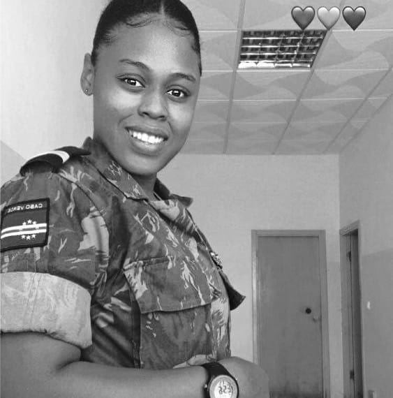

Denise Carvalho
Olá! Sou Denise Carvalho, desenvolvedora frontend apaixonada por tecnologia e design. Meu objetivo é criar soluções dinâmicas e inovadoras que melhorem a experiência do usuário, com foco em usabilidade e responsividade. Explore meu portfólio e conheça meus projetos.
Minha Jornada
- 2017 - Formação Militar
- 2019 - Curso de Sargento
- 2022 -Formaçao Electronica e Automação
- 2024 - Desenvolvimento de projetos pessoais e freelances em HTML, CSS, JavaScript